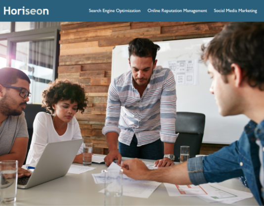

About Me
Education:
BA in Liberal Arts.
AAS in Marketing Management.
Work Experience:
Ambassador at Global Network Y-PEER under UNFP.
Manager at Golder Crust Restaurant.

Education:
BA in Liberal Arts.
AAS in Marketing Management.
Work Experience:
Ambassador at Global Network Y-PEER under UNFP.
Manager at Golder Crust Restaurant.
Goal of the project was to refine the code to make website accessible.


E-mail: muminova.m@hotmail.com
Phone: (000)000-0000